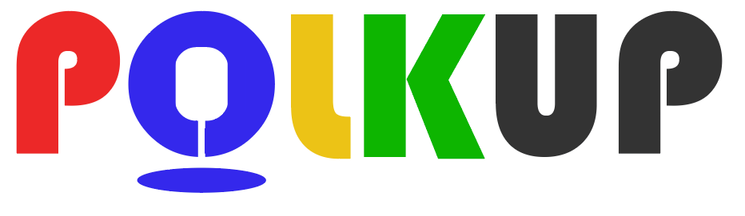
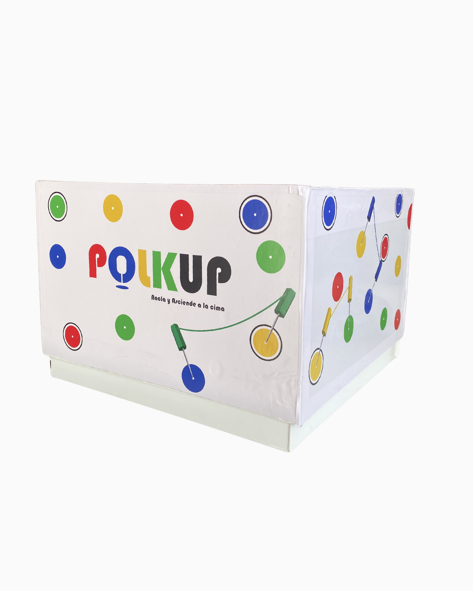
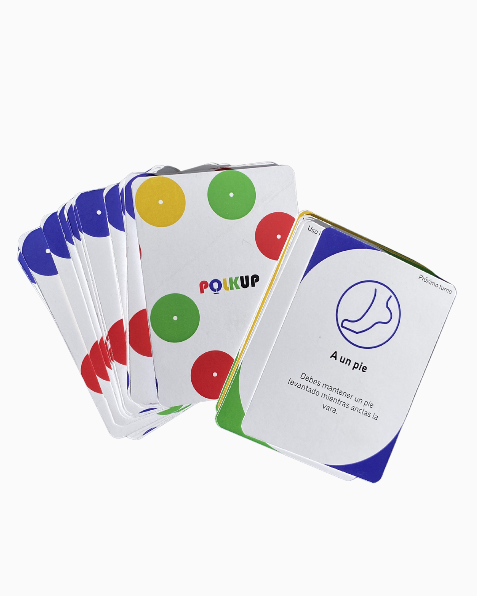
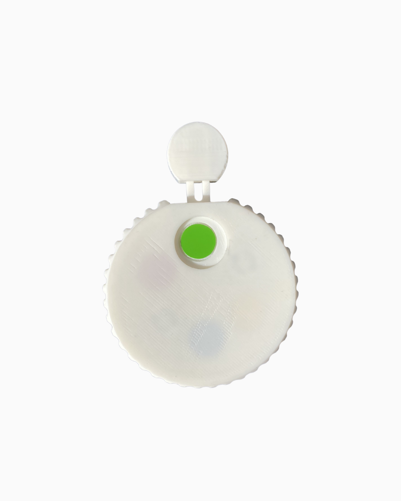
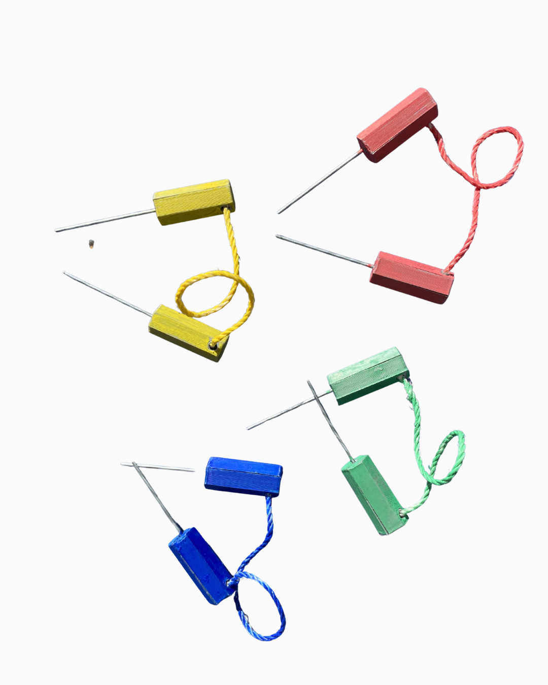
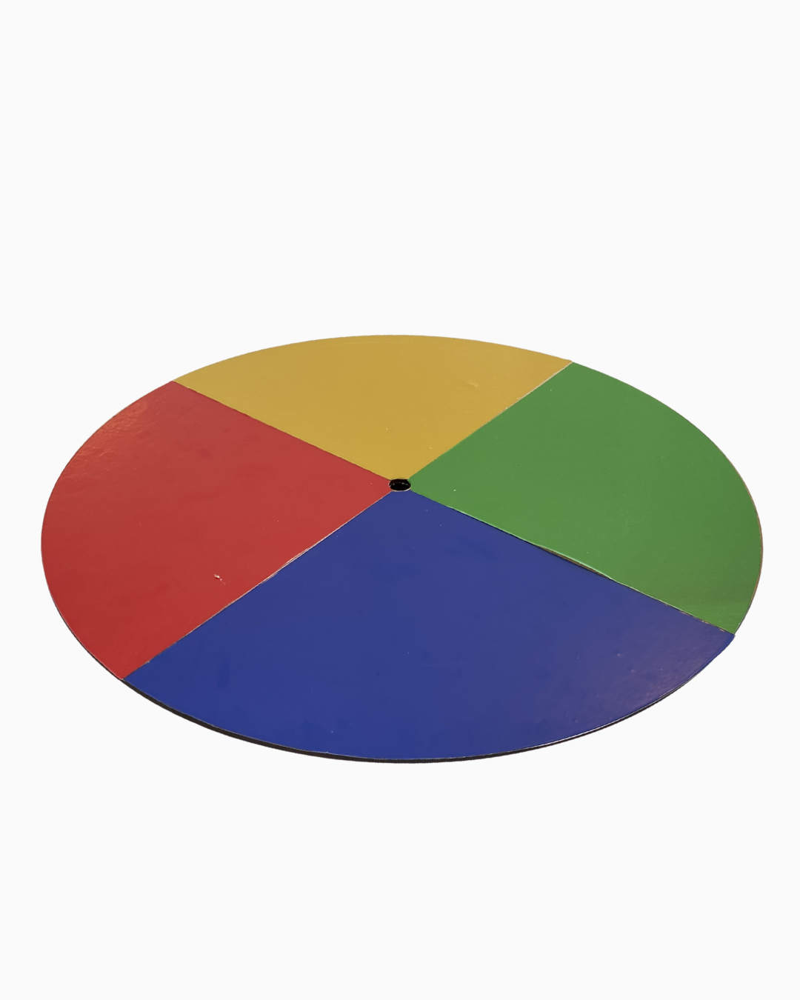

¿Cómo se juega?
Cada jugador se ubica en la base de la torre, uno frente a otro, formando una cruz. El jugador más alto comienza presionando el dado mecánico.

Llevar tus dos varillas hasta la cima de la torre antes que los demás jugadores.
Polkup es un juego de mesa interactivo donde los jugadores compiten por ser los primeros en llegar a la cima de la torre.
.png)
Estructura final del juego Polkup.





Cada jugador se ubica en la base de la torre, uno frente a otro, formando una cruz. El jugador más alto comienza presionando el dado mecánico.
Según el color obtenido, debe elegir el agujero de ese color que le resulte más cercano o estratégico. El jugador puede mover cualquiera de sus dos varas (delantera o trasera) hacia el nuevo agujero. En su turno, el jugador puede mover la base giratoria y las secciones de la torre hasta donde las cuerdas tensas lo permitan. Al momento de insertar la vara, no podrá volver a tocar la torre hasta completar el movimiento.
Siempre debe mantener al menos una vara anclada a la estructura. No puede tener ambas varas sin apoyo al mismo tiempo. Si un jugador cae en un agujero con borde negro, deberá sacar una carta y realizar la acción indicada. Si ambas varas se sueltan, se considera una caída y el jugador debe volver a comenzar desde la base de la torre. Una vez realizado el movimiento, el turno finaliza y continúa el siguiente jugador.
Gana el jugador que sea el primero en llegar con sus dos varillas a la cima de la torre.